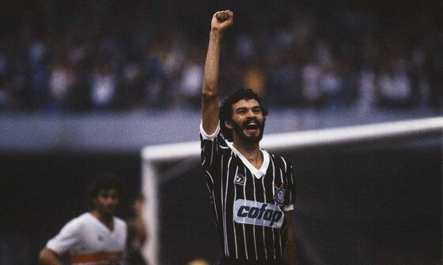

Sócrates

Como futebolista, Sócrates atuou como meio-campista e era considerado um dos grandes craques do futebol brasileiro
na década de 1980. É um dos maiores ídolos do Corinthians ao lado de Luisinho, Cláudio, Rivellino, Marcelinho
Carioca, Neto, Baltazar e Cássio e do Botafogo de Ribeirão Preto, ao lado de Zé Mario e do seu irmão Raí. Defendeu a
Seleção Brasileira entre 1979 e 1986, sendo capitão da Amarelinha na Copa do Mundo FIFA de 1982 Notabilizou-se
também por seu ativismo político, particularmente na década de 1980, quando liderou um movimento pela democratização
do futebol e participou do movimento pelas Diretas Já
Voltar